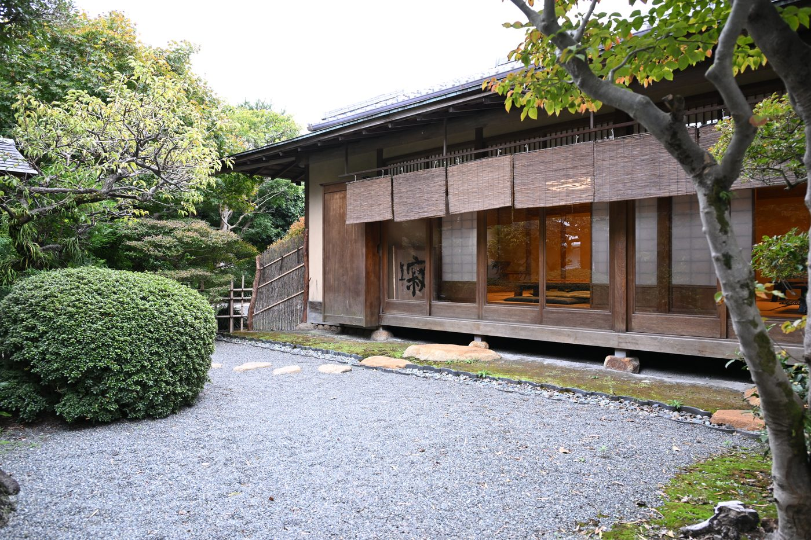
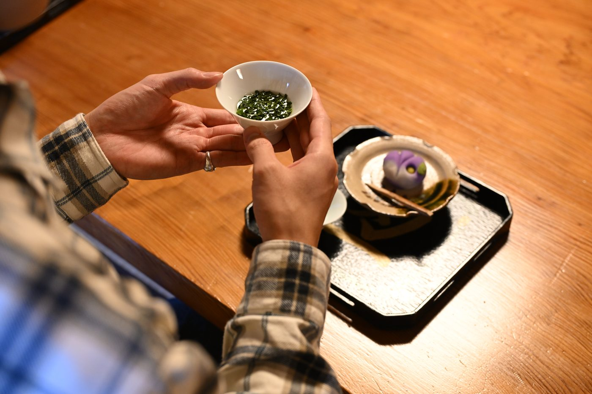
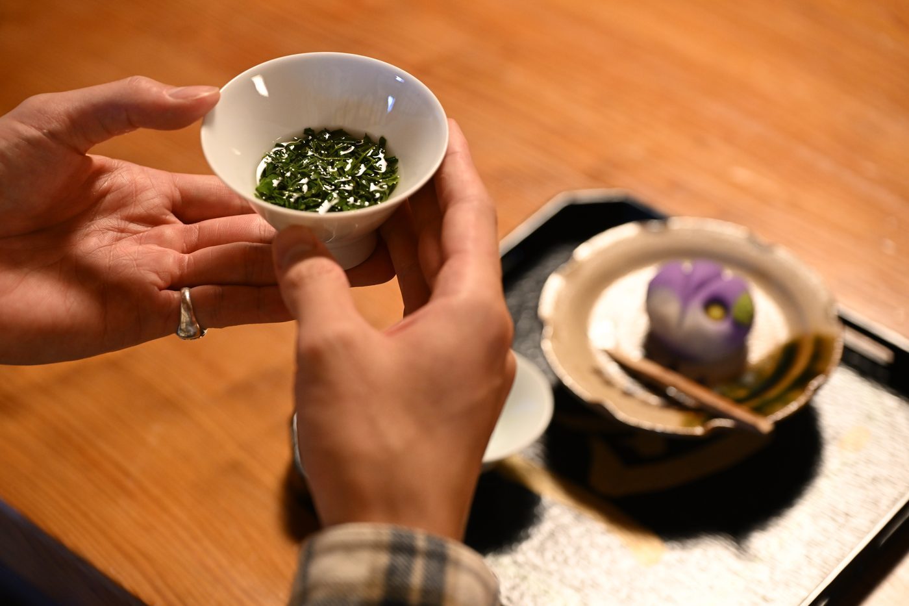
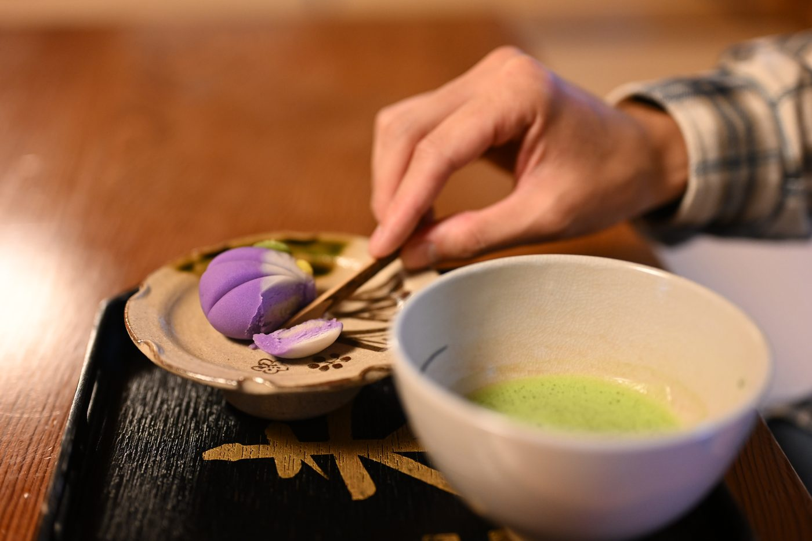
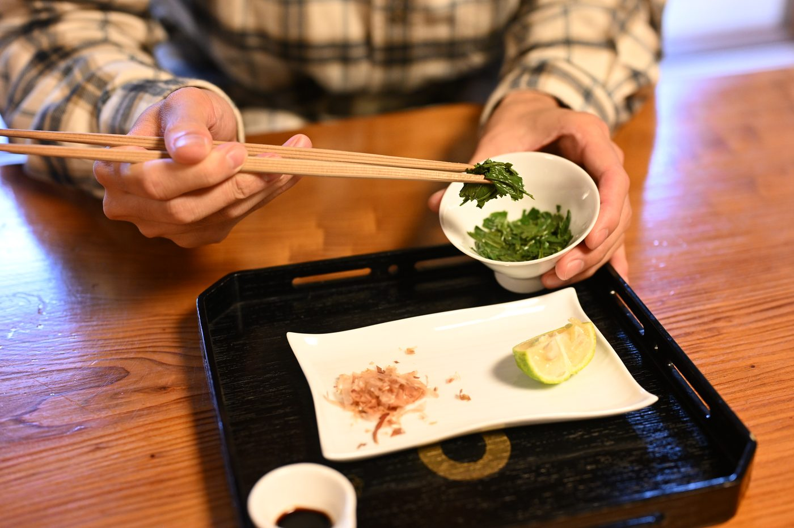
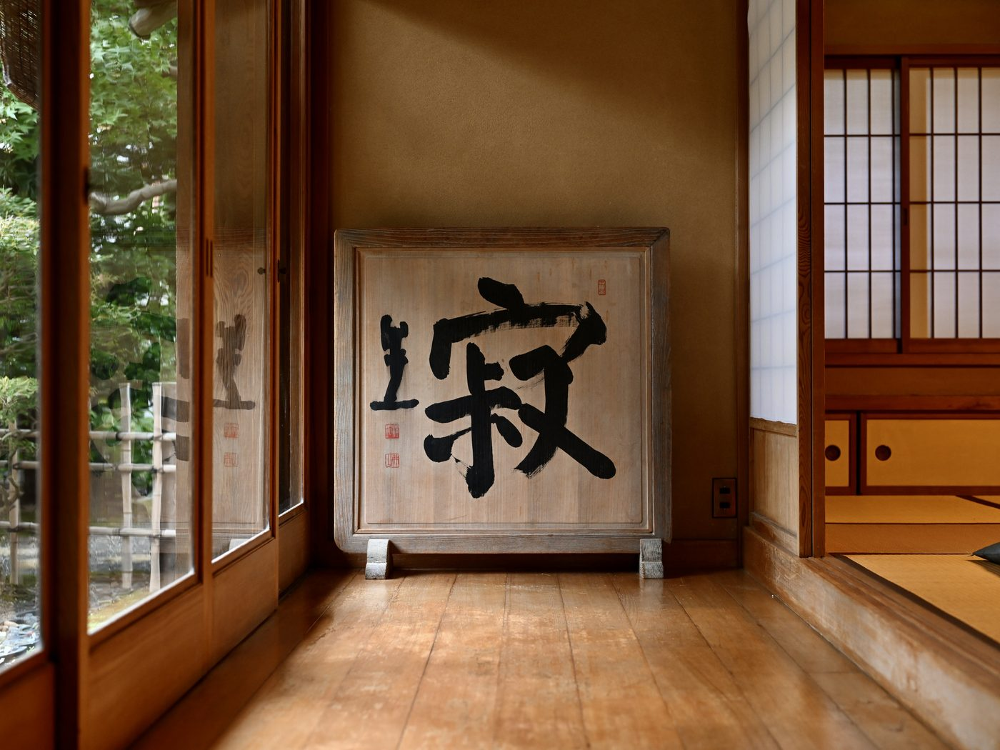

When Japanese people say "tea," they usually don't mean the bright-green matcha of the tea ceremony. They mean sencha — the everyday green tea poured after meals, for guests, at the sushi counter, in the pause between tasks. Matcha is ceremony and occasion; sencha is daily life — a drink, but also a small ritual for slowing down, marking the season, and welcoming someone. At the foot of Mt. Fuji you can taste it the way it's meant to be tasted: slowly, locally, and far from the crowds.

Shizuoka — Japan's tea country
Shizuoka isn't as famous abroad as Tokyo or Kyoto, but to Japan it's tea country. The prefecture grows roughly one-third to 40% of the nation's green tea, depending on how you measure it — about 36% of all crude tea and 41% of sencha in recent figures. The city at Mt. Fuji's southern foot is a tea town in its own right, where tea is the top crop by planted area and many growers still do everything themselves — growing, processing and selling their own leaf. It's raised on the clean water and air of the mountain; in places the tea fields and Fuji sit in a single view.

A tea garden that values care over scale
The garden we visit isn't a big commercial operation. It's a family-run tea garden, around sixty years old, that grows, processes and sells its own tea by hand — less factory, more small estate, closer to the way a small winery makes its wine. The leaf is hand-picked, grown without chemical fertilizer, and taken from the first soft sprouts of the season, the tenderest and most fragrant part of the plant. None of it is showy — and yet the garden's tea has won Japan's Prime Minister's Award, among other national honors. Premium, but not flashy: exactly the kind of local, uncrowded place that's hard to find on your own.

One cup, served slow and low
This isn't a quick cup from a vending machine, and it isn't bitter the way many visitors expect — made from hand-picked young leaves, it's soft, deeply fragrant and rich in umami. You're served a single, carefully prepared tea — one type, one cup — and shown how to draw the best from it. A small lidded cup holds about four grams of leaf. The first pour is deliberately cool, around 40°C, coaxing out sweetness and aroma rather than bitterness; you sip it through a narrow gap between the lid and the cup. Then a little hotter water for a second steeping, hotter again for a third, so the same leaf shows a different face each time — a slow, attentive way to taste how one tea changes.

A seasonal sweet, made by hand
The tea doesn't come alone. With it comes a hand-made Japanese sweet — usually nerikiri, sweet white-bean paste shaped into the flowers of the moment: hydrangea in the rainy season, cherry blossom in spring. It isn't just something sweet; it's a small, edible expression of the season. Tasting the umami of the tea against its gentle sweetness carries one of the quiet ideas at the heart of Japanese culture — that you eat and drink the season, not just the food.

Then you eat the leaves
Here's the part that surprises even Japanese guests: you eat the tea leaves. Most green tea leaves are made only for steeping, never for eating. But when the leaf is this tender — young, hand-picked, top grade — the steeped leaves become a small dish of their own. After the final infusion they're lifted into a bowl and seasoned with soy sauce, a little bonito, sometimes a touch of yuzu. Green tea you don't just drink, but eat.

A room built from a single 400-year-old tree
The setting is part of it. The café sits in a traditional wooden hall built — remarkably — from a single 400-year-old Japanese cedar, a trunk so vast it would take five adults with arms outstretched to circle it. Like Japan's old shrines and temples, it's joined with interlocking woodwork and almost no nails or metal. Nothing here is grand or decorative; it's minimal, calm and full of empty space — which suits a tea that's about subtlety, not spectacle: fine aroma, umami, the shift of temperature, the feel of the season.
Coming all this way for Mt. Fuji and only looking at the mountain would be a shame. At its foot is a green-tea culture shaped by the same water, air and climate — the local, unhurried side of Fuji that most visitors never reach.